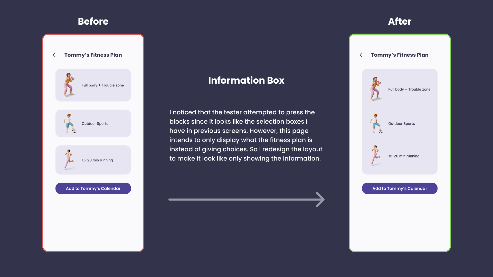
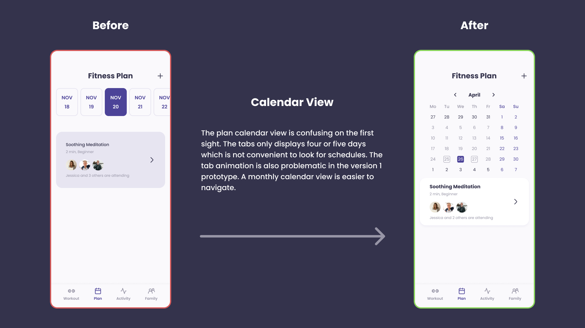

Let's Fit!
DH110 2023 Spring UX Project by Yifei Sun
DH110 2023 Spring UX Project by Yifei Sun
UX Researcher
UI Designer
April-June 2023
Individual
Figma
Adobe Illustrator
Miro
LetsFit! is a mobile phone App designed to help families engage in physical activities together while fostering connection, communication, and a healthier lifestyle.
The app aims to appeal to a wide range of family members, with various fitness levels and interests, and provides a platform to track individual and collective fitness progress.
Family fitness becomes a critical issue in the post-pandemic world. Sedentary lifestyles bring concerns about health and well-being. However, finding time and motivation for a family to engage in physical activities can be challenging, especially for varied fitness levels and interests. Family fitness is related to not only physical health but also emotional bonds within families. LetsFit! aims to tackle this problem, promoting a healthier lifestyle and fostering stronger connections within families through shared fitness experiences.

I conducted heuristics evaluation of two current family fitness Apps. The two apps both have good design decisions that effectively foster family engagement and physical activity, and also areas for improvement.
Usability testing collects empirical data from the observation on how the users interact with the product. I conducted usability testing on the Exercise: At Home Workout App to gain feedback and measure overall user experience.
The user could navigate the app smoothly, indicating the intuitiveness of the app design. The app's gamification elements were received positively. However, the overall design consistency still needs to be improved.
I used context inquiry research methodology that combined participatory observation with an interview approach. I observed the participant’s activities related to family fitness, followed by in-depth discussions to understand user needs, preferences, and challenges. I found out the importance of personalization and flexibility in family fitness routines, and how technology can bridge the gap of families living apart.
The target users are family members of different ages, fitness levels, and interests, who seek to improve their well-being, stay connected, and motivate each other in their fitness journeys.
I created personas and scenarios centered around features that would reach their goals.


Based on the features I planned in personas and scenarios, I created a low-fidelity prototype that gives a simple visual representation of the app's layout, content, structure, and functionality. I also test the wireflow with a participant to identify potential usability issues, and evaluate whether it meets the goals of the target users at an early stage.
Considering user needs and preferences, I select the color palette and typography that both aligns with the app's goals and enhances user experience. Shape and layout decisions are made to facilitate intuitive navigation. I also take considerations on how different elements interact with consistency and guide the user through the interface.
The primary color selected is purple, symbolizing energy and playfulness. I choose Poppins as the font for its readability and approachability. It looks better considering the overall aesthetics for its rounded edges. Shapes in the interface were primarily rounded rectangles with a large corner radius, adding to the app's friendly feel.

High-fidelity interactive prototypes involve incorporating the final decisions on visual design elements including color palette, typography, shapes, and layout. The goal is to make the prototype as close to the final product as possible in terms of look, feel, and interaction.
I conducted a cognitive walkthrough usability test to ask a participant to go over the tasks in the app following each step. The participant was able to navigate through all tasks smoothly, indicating that the user flow and interface are intuitive and easy to follow. However, there is some confusion when navigating the Plan page and the calendar.
 Overall I learned a lot during the process of making this family fitness app. This is my first time working alone on an individual UX project. It is somehow different from my experience working with a team of project managers and developers. I make decisions on the product based on my observations and interactions with user research participants or potential users.
Throughout the project, I learned about the importance of diverse user research methodologies, including context inquiry, impression test, cognitive walkthrough, etc. I understood that the selection of research methods varies depending on the project's phase and the information needed. The research findings formed the backbone of my design decisions. Instead of relying solely on assumptions or personal preferences, I was able to ground my decisions in real user needs and behaviors, ensuring that the design was user-centric.
I found design to be deeply intuitive. It went beyond just applying principles and theories while focusing on users' emotions and experiences. It required me to tune into the user's perspective and empathetically understand their needs, pain points, and desires. This intuitive understanding enabled me to create a design that was not only efficient and practical but also engaging for the users.
Through this project, I realized that design is not about reaching a perfect solution at the first try but about continuously refining and improving based on feedback and testing results. Each iteration brought new insights and opportunities for enhancement, making the design aligned with the users' needs and expectations. This iterative process contributed to the development of my family fitness app to ensure a better outcome.